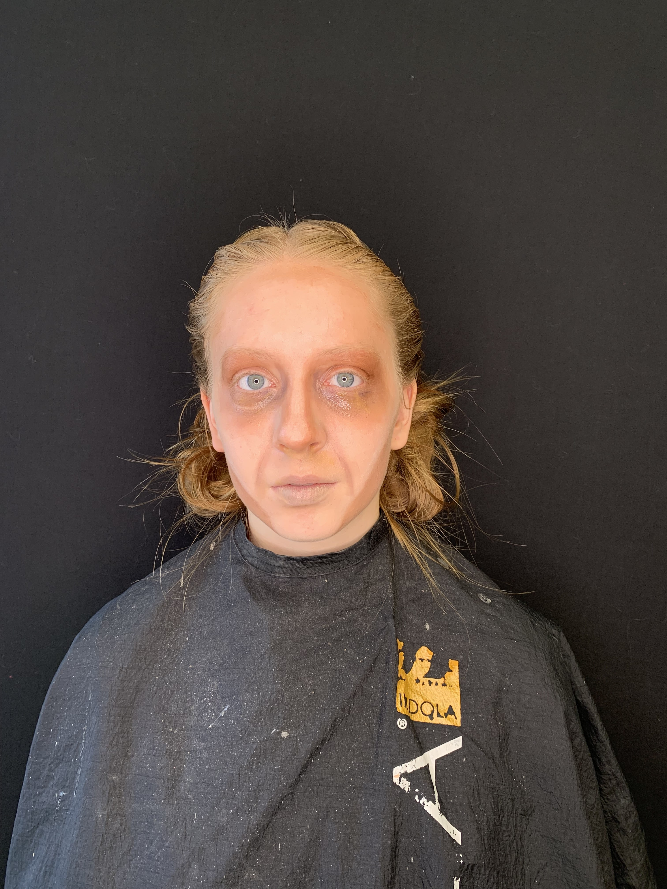

Our Services
- Special Effects Makeup
- Prosthetic Application
- Wound Creation
- Character Transformation
- Film & TV Effects
- Vintage Styles
- 1920s Flapper
- 1950s Pin-up
- 1960s Mod
- Classic Hollywood
Portfolio

Professional Resume
Education
- Certified SFX Makeup Artist - Cinema Makeup School, 2022
- Advanced Prosthetics Workshop - Tom Savini's Special Make-Up Effects Program, 2021
- Vintage Beauty and Historical Makeup Techniques - Vintage Beauty Academy, 2020
Professional Experience
- Lead Makeup Artist - Independent Horror Films (2022-Present)
- Created and applied prosthetic effects for 10+ independent films
- Managed a team of 3 assistant makeup artists
- Developed innovative techniques for quick-change effects
- Vintage Style Specialist - Retro Photography Studio (2020-2022)
- Specialized in authentic period makeup looks
- Conducted workshops on vintage beauty techniques
Technical Skills
- Prosthetic Creation and Application
- Period-Accurate Makeup Techniques
- Airbrush Makeup
- Wound Simulation
- Hair Styling and Wig Work
Industry Trends
Data visualization by Andy Kriebel - Makeup of UK Beauty Industry
SFX Makeup Tutorial
Learn how to create realistic SFX makeup effects